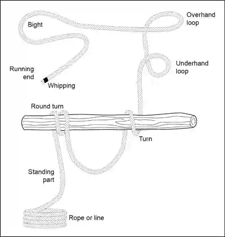
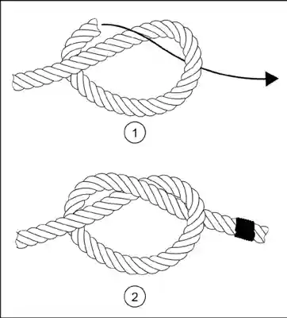
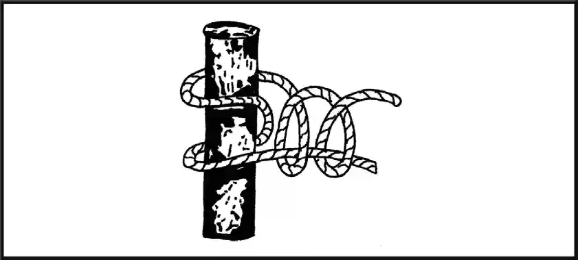
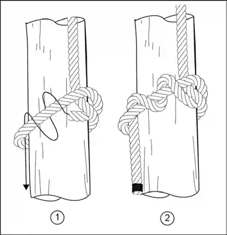
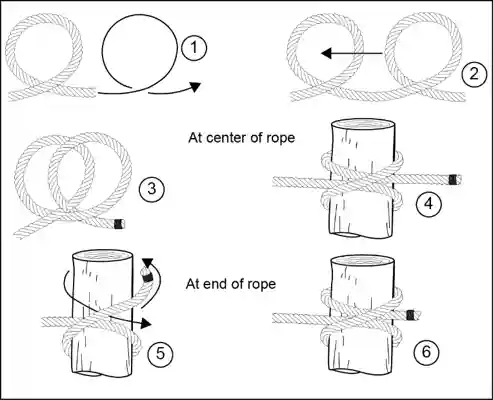
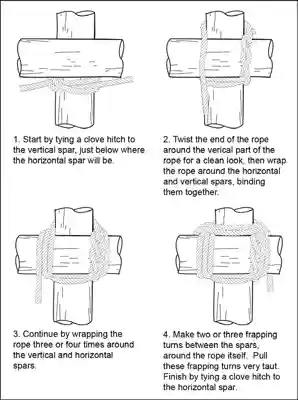
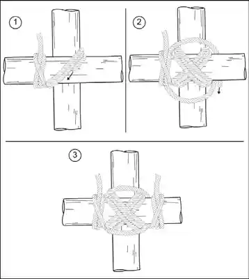
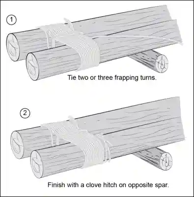
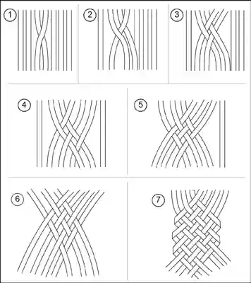
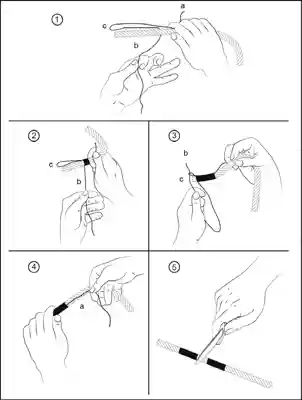

Appendix A: Survival Knots and Rope
To be able to construct shelters, traps and snares, weapons and tools, and operate personnel recovery devices and equipment the isolated person should have a basic knowledge of ropes and knots and some of the terminology used with them.
ROPE TERMINOLOGY
A-1. The following information is general terminology used for ropes and knots (see figure A-1, on page A2):
Bend. A bend (called a knot in this manual) is used to fasten two ropes together or to fasten a rope to a ring or loop.
Bight. A bight is a bend or U-shaped curve in a rope.
DRESSING THE KNOT
A-2. Dressing the knot is the orientation of all knot parts so that they are properly aligned, straightened, or bundled. Neglecting this can result in a 50 percent reduction in knot strength. This term is sometimes used for setting the knot, which involves tightening all parts of the knot so they bind on one another and make the knot operational. A loosely tied knot can easily deform under strain and change, becoming a slipknot or worse, untying. Rope terminology includes the following-
Fraps. A means of tightening the lashings by looping the rope perpendicularly around the wraps that hold the spars or sticks together.
Hitch. Used to tie a rope around a timber, pipe, or post so that it will hold temporarily, but can readily be untied.
Knot. An interlacement of the parts of bodies as cordage, forming a lump or knot or any tie or fastening formed with a cord, rope, or line, including bends, hitches, and splices. It is often used as a stopper to prevent a rope from passing through an opening.
Lashings. A means of using wraps and fraps to tie two or three spars or sticks together to form solid corners or to construct tripods. Lashings begin and end with clove hitches.
Lay. The lay of the rope is the same as the twist of the rope.
Line. A single thread, string, or cord.
Loop. A fold or doubling of the rope through which another rope can be passed. A temporary loop is made when the running end passes over the standing part.
Overhead turn or loop. An overhead loop is made when the running end passes over the standing part.
Pig tail. That part of the running end that is left after tying the knot. It should be no more than 4 inches long to conserve rope and prevent interference.
Rope. A rope is made of strands of fiber twisted or braided together.
Round turn. The same as a turn, with the running end leaving the circle in the same general direction as the standing part.
Running end. The running end is the free or working end of a rope.
Standing end. The standing end is the balance of the rope, excluding the running end.
Turn. A turn describes the placing of a rope around a specific object such as a post, a rail, or a ring with the running end continuing in the opposite direction from the standing end.
Underhand turn or loop. An underhand turn or loop is made when the running end passes under the standing part.
Whipping. Any method of preventing the end of a rope from untwisting or becoming unwound. It is done by wrapping the end tightly with a small cord, tape or other means. It should be done on both sides of an anticipated cut in a rope, before cutting the rope in two. This prevents the rope from immediately untwisting.
Wraps. Simple wraps of rope around two poles or sticks (square lashing) or three poles or sticks (tripod lashing). Wraps begin and end with clove hitches and get tighter with fraps. All together, they form a lashing.
Figure A-1. Elements of ropes and knots

BASIC KNOTS
A-3. Descriptions of basic knots and the methods for tying them are discussed in paragraphs A-4-A-25.
Overhand knot
A-4. This is the most commonly used and the simplest of all knots. An overhand knot may be used to prevent the end of a rope from untwisting, to form a knot at the end of a rope, or as part of another knot. This knot should replace the half-hitch as a finishing knot for other knots. This knot alone will reduce the strength of a straight rope by 55 percent. To tie an overhand knot, make a loop near the end of the rope and pass the running end through the loop, pulling it tight (see figure A-2).
Figure A-2. Overhand

Round turn and two half hitches
A-5. The round turn and two half hitches (seen in figure A-3) is the main anchor knot for one-rope bridges and other applications when a good anchor knot is required and where high loads would make other knots jam and difficult to untie. It is most used to anchor rope to a pole or tree.
Figure A-3. Round turn and two half hitches

Figure-eight knot
A-6. Use the figure-eight knot to form a larger knot than would be formed by an overhand knot at the end of a rope. A figure-eight knot is used in the end of a rope to prevent the ends from slipping through a fastening or loop in another rope. To make a figure-eight knot, make a loop in the standing part, pass the running end around the standing part back over one side of the loop, and down through the loop. The running end can then be pulled tight (see figure A-4).
Figure A-4. Figure-eight knot
KNOTS FOR JOINING ROPE
A-7. When isolated persons require rope longer than the individual pieces they are equipped with or have improvised, they securely tie multiple ropes together using knots designed for adjoining rope of equal and unequal diameters in wet and dry conditions. Knots for joining two ropes fall into the following categories:
Square knot.
Single sheet bend.
Double sheet bend.
SQUARE KNOT
A-8. The square knot is used for tying two ropes of equal diameter together to prevent slippage (see figure A-5). To tie a square knot, lay the running end of each rope together but pointing in opposite directions. The running end of one rope can be passed under the standing part of the other rope. Bring the two running ends up away from the point where they cross and cross them again. Once each running end is parallel to its own standing part, the two ends can be pulled tight. If each running end does not come parallel to the standing part of its own rope, the knot is called a "granny knot." Because it will slip under the strain, a granny knot should not be used.
A-9. A square knot can also be tied by making a bight in the end of one rope and feeding the end of the other rope through and around this bight. The running end of the second rope is routed from the standing side of the bight. If the procedure is reversed, the resulting knot will have a running end parallel to each standing part but the two running ends will not be opposite each other. This knot is called a "thief" knot. It will slip under the strain and is difficult to untie. A true square knot will draw tighter under strain. A square knot can be untied easily by grasping the bends of the two bights and pulling the knot apart.
Figure A-5. Square knot
SINGLE SHEET BEND
A-10. The use of a single sheet bend, sometimes called a weaver's knot, is limited to tying together two dry ropes of unequal size. To tie the single sheet bend, the running end of the smaller rope should pass through a bight in the larger rope. The running end should continue around both parts of the larger rope and back under the smaller rope. The running end can then be pulled tight. This knot will draw tight under light loads but may loosen or slip when the tension is released (see figure A-6).
Figure A-6. Single sheet bend
DOUBLE SHEET BEND
A-11. The double sheet bend works better than the single sheet bend for joining ropes of equal or unequal diameter, joining wet ropes, or tying a rope to an eye. It will not slip or draw tight under heavy loads. To tie a double sheet bend, a single sheet bend is tied first. However, the running end is not pulled tight. One extra turn is taken around both sides of the bight in the larger rope with the running end for the smaller rope. Then tighten the knot (see figure A-7).
Figure A-7. Double sheet bend
KNOTS FOR MAKING LOOPS
A-12. Knots for making loops fall into the following categories:
Bowline.
Bowline on a bight.
French bowline.
Speir knot.
Overhand knot fixed loop. The knot that the isolated person should learn and commit to memory for the use in conjunction with a recovery device is the overhand fixed loop.
BOWLINE
A-13. The bowline is a useful knot for forming a loop in the end of a rope. It is also easy to untie. To tie a bowline knot, the running end of the rope passes through the object to be affixed to the bowline and forms a loop in the standing part of the rope. The running end is then passed through the loop from underneath and around the standing part of the rope, and back through the loop from the top. The running end passes down through the loop parallel to the rope coming up through the loop. The knot is then pulled tight (see figure A- 8).
Figure A-8. Bowline knot
BOWLINE ON A BIGHT
A-14. It is sometimes desirable to form a loop at some point in a rope other than at the end. The bowline on a bight can be used for this purpose. It is easily untied and will not slip. The same knot can be tied at the end of a rope by doubling the rope for a short section. A doubled portion of the rope is used to form a loop as in the case of the bowline. The bight end of the doubled portion is passed up through the loop, back down up around the entire knot, and tightened (see figure A-9).
Figure A-9. Bowline on a bight knot

FRENCH BOWLINE
A-15. The French bowline is sometimes used as a sling for lifting people. When used in this manner, one loop is used around the body under the arms. The weight of the injured person keeps the two loops tight so that the victim cannot fall out of the sling. Therefore, it is particularly useful as a sling for someone who is unconscious.
A-16. The French bowline is started in the same way as the simple bowline. Make a loop in the standing part of the rope. The running end is passed through the loop from underneath and a separate loop is made. The running end is passed through the loop, again from underneath, around the back of the standing part and back through the loop so that it comes out parallel to the looped portion. The standing part of the rope is pulled to tighten the knot, leaving two loops (see figure A-10).
Figure A-10. French bowline
SPEIR KNOT
A-17. A speir knot is used when a fixed loop, a nonslip knot, and a quick release are required. It can be tied quickly and released by a pull on the running end. To tie a speir knot, the running end is passed through a ring or around a pipe or post and brought back on the left side of the standing part. Both hands are placed, palms up, under both parts of the rope with the left hand higher than the right hand; grasping the standing part with the left hand and the running end with the right hand. The left hand is moved to the left and the right hand to the right to form two bights. The left hand is twisted a half turn toward the body so that the bight is twisted into a loop. Pass the bight over the rope down through the loop. The speir knot is tightened by pulling on the bight and the standing part (see figure A-11).
OVERHAND KNOT FIXED LOOP
A-18. The overhand knot fixed loop is a simple knot which forms a fixed loop in a rope. Made by tying an overhand knot in the bight, it can be tied anywhere along a rope (does not need any working end). The knot can be used for attaching clips, hooks, other rope, etc. The disadvantage of this knot is that that it is likely to jam tight when the rope has been pulled and the knot may need to be cut off. The knot is used in conjunction with a personnel recovery.
Figure A-11. Speir knot
HITCHES
A-19. A hitch is any of various knots used to form a temporary noose in a rope or to secure a rope around a timber, pipe, or post so that it will hold temporarily but can be readily undone. The types of hitches discussed in this manual are as follows:
Half hitch.
Two half hitches.
Timber hitch.
Timber hitch and half hitch.
Clove hitch.
Sheepshank.
Half Hitch
A-20. This is the simplest of all knots and used to be the safety, or finishing knot for all Army knots. Because ithad a tendency to undo itself without load, it has since been replaced by the overhand. The half hitch is used to tie a rope to a timber or to another larger rope. It is not a very secure knot or hitch and is used for temporarily securing the free end of a rope. To tie a half hitch, the rope is passed around the timber, bringing the running end around the standing part, and back under itself (see figure A-12).
Two Half Hitches
A-21. A quick method for tying a rope to a timber or pole is to use two half hitches. The running end of the rope is passed around the pole or timber, and a turn is taken around the standing part and under the running end. This is a one half hitch. The running end is passed around the standing part of the rope and back under itself again (see figure A-12).
Figure A-12. Half hitch and a two half hitch
Timber Hitch
A-22. The timber hitch is used for moving heavy timbers or poles. To make the timber hitch, a half hitch is made and similarly the running end is turned about itself at least another time. These turns must be taken around the running end itself or the knot will not tighten against the pole (see figure A-13).
Figure A-13. Timber hitch
TIMBER HITCH AND HALF HITCH
A-23. To get a tighter hold on heavy poles for lifting or dragging, a timber hitch and half hitch are combined. The running end is passed around the timber and back under the standing part to form a half hitch. Further along the timber, a timber hitch is tied with the running end. The strain will come on the half hitch and the timber hitch will prevent the half hitch from slipping (see figure A-14).
Figure A-14. Timber hitch and half hitch

CLOVE HITCH
A-24. A clove hitch is used to fasten a rope to a timber, pipe, or post. It can be tied at any point in a rope. To tie a clove hitch in the center of the rope, two turns are made in the rope close together. They are twisted so that the two loops lay back-to-back. These two loops are slipped over the timber or pipe to form the knot. To tie the clove hitch at the end of a rope, the rope is passed around the timber in two turns so that the first turn crosses the standing part and the running end comes up under itself on the second turn (see figure A-15).
Figure A-15. Clove hitch

SHEEPSHANK
A-25. A sheepshank is a method of shortening a rope, but it may also be used to take the load off a weak spot in the rope. To make the sheepshank (which is never made at the end of a rope), two bights are made in the rope so that three parts of the rope are parallel. A half hitch is made in the standing part over the end of the bight at each end (see figure A-16).
Figure A-16. Sheepshank
PRUSSIC
A-26. This knot ties a short rope around a longer rope (for example, a sling rope around a climbing rope) in such a manner that the short rope will slide on the climbing rope if no tension is applied, and will hold if tension is applied on the short rope. This knot can be tied with an end of rope or bight of rope. When tied with an end of rope, the knot is finished off with a bowline. The nonslip nature of the knot on another rope allows climbing of ropes with foot holds. It can also be used to anchor ropes or the end of a traction splint on a branch or ski pole. (See figure A-17).
Figure A-17. Prussic
LASHINGS
A-27. A lashing is as rope, wire, or chain used for binding, wrapping, or fastening. Numerous items require lashings for construction; for example, shelters, equipment racks, and smoke generators. The following three types of lashings are discussed in this appendix:
Square lashing.
Diagonal lash.
Shear lashing.
SQUARE LASHING
A-28. Square lashing is started with a clove hitch around the log, immediately under the place where the crosspiece is to be located. In laying the turns, the rope goes on the outside of the previous turn around the crosspiece, and on the inside of the previous turn around the log. The rope should be kept tight. Three or four turns are necessary. Two or three "frapping" turns are made between the crosspieces. The rope is pulled tight; this will bind the crosspiece tightly together. It is finished with a clove hitch around the same piece that the lashing was started on. The square lash is used to secure one pole at right angles to another pole. Another lash that can be used for the same purpose is the diagonal lash (see figure A-18).
Figure A-18. Square lashing

DIAGONAL LASHING
A-29. Diagonal lashing is started with a clove hitch around the two poles at the point of crossing. Three turns are taken around the two poles. The turns lie beside each other, not on top of each other. Three more turns are made around the two poles, this time crosswise over the previous turns. The turns are pulled tight. A couple of frapping turns are made between the two poles, around the lashing turns, making sure they are tight. The lashing is finished with a clove hitch around the same pole the lash was started on (see figure A- 19).
Figure A-19. Diagonal lashing

SHEAR LASHING
A-30. Shear lashing is used for lashing two or more poles in a series. The desired numbers of poles are placed parallel to each other and the lash is started with a clove hitch on an outer pole. The poles, laid loosely beside each other, are often lashed together using seven or eight turns of the rope. Make frapping turns between each pole. The lashing is finished with a clove hitch on the pole opposite that on which the lash was started (see figure A-20).
Figure A-20. Shear lashing

ROPE CONSTRUCTION
A-31. There are two basic types of rope to use in an isolation situation-natural fiber ropes and manmade fiber ropes. Both types have different strengths and weaknesses. Isolated persons should know as much about the properties of rope as they can. This will allow them to use or, in some cases, improvise ropes of their own; creating the right tool for the task that will keep from wasting time, energy, and effort.
NATURAL FIBER TYPES
A-32. Natural fiber ropes are made from natural fibers from plants and animals such as grasses, siècle, hemp, cotton, manila, hair, leather, and sinew. These fibers are either twisted or braided into a single flexible structure that has a high degree of tensile strength. Natural ropes are resistant to friction-generated heat but can be destroyed if the fibers are cut with a sharp rock or knife. Natural rope can be cut into sections using abrasion; for example, rubbing it vigorously across rock, cement, concrete, metal, or wood surfaces. When the integrity of the fibers is damaged, the rope can be separated into sections or broken down to be used for other purposes. Most natural ropes are thicker in diameter and can be difficult to tie knots with. If not cared for and kept clean, natural fiber ropes can begin to break down and lose tensile strength.
MANMADE FIBER TYPES
A-33. Manmade fiber ropes are manufactured from fibers made out of fabrics like polypropylene, nylon, and Kevlar. Manmade ropes are braided or twisted into a single, flexible structure. Manmade fiber ropes are strong because the fibers are strong and can be manufactured in one long continuous strand with no splices of fiber being used during the construction process.
A-34. Manmade fiber ropes are water and weather resistant. Because these ropes are essentially made from plastic material, they are susceptible to break down from friction-generated heat and abrasion. Isolated personnel can use a piece of Kevlar-like material or parachute cord to saw these lengths of rope into usable pieces through melting them with friction-generated heat. These ropes can also be cut with a knife, a rock, or a piece of glass. Manmade fiber ropes are good for tying knots but should still be kept clean and out of the sun for UV protection and damage mitigation.
A-35. Kernmantle rope is a type of a manmade fiber rope that has an outer sheath with smaller fibers running through the center known as intercore fibers. This type of construction makes kernmantle ropes very strong and abrasion resistant. They are commonly used for rock climbing and other functions like repelling. Kernmantle ropes come in two types-static (will not stretch) and dynamic (designed to stretch and return to its original manufactured shape). Parachute cord is a good example of this type of static construction.
CONSTRUCTION TECHNIQUES
A-36. Almost any natural fibrous material can be spun into good serviceable rope or cord, and many materials which have a length of 12 to 24 inches or more can be braided. Ropes up to 3 and 4 inches in diameter can be "laid" by four people, and tensile strength for bush-made rope of 1 inch in diameter ranges from 100 pounds to as high as 3,000 pounds.
A-37. Using a three-lay rope of 1-inch diameter as standard, the following table of tensile strengths (table A- 1) may serve to illustrate general strengths of various materials. For safety's sake, the lowest figure should always be regarded as the tensile strength.
Table A-1. Tensile strength of natural fibers
Fiber Tensile Strength (in Pounds)
Green grass 100 to 250
Bark fiber 500 to 1,500
Palm fiber 650 to 2,000
Sedges 2,000 to 2,500
Money rope (lianas) 560 to 700
Lawyer vine (calamus), 1/2-inch diameter 1,200
Note. Doubling the diameter quadruples the tensile strength; half the diameter reduces the tensile strength to one-fourth.
TWISTING TECHNIQUE
A-38. Use any material with long strong threads or fibers which have been previously tested for strength and pliability. Gather the fibers into loosely held strands of even thickness. Each of these strands is twisted clockwise. The twist will hold the fibers together. The strands should be formed into a one-eighth inch diameter. As a general rule, there should be about 15 to 30 fibers to a strand. Two, three, or four of these strands are later twisted together or "layered" with a counterclockwise twist, while at the same time, the separate strands which have not yet been laid up are twisted clockwise. Each strand must be of equal twist and thickness (see figure A-21).
Figure A-21. Twisting fibers
A-39. In a similar manner, the twisted strands are put together into lays, and the lays into ropes. Isolated personnel must twist the strands together and ensure that the twisting is even, the strands are uniform, and the tension on each strand is equal. In "laying," care must be taken to ensure that each of the strands is evenly "laid up;" that is; one strand does not twist around the other.
A-40. When spinning fine cords for fishing lines, and snares considerable care must be taken to keep the strands uniform and the lay even. Fine thin cords of no more than 1/32-inch thickness can be spun with the fingers and are capable of taking a breaking strain of 20 to 30 pounds or more.
A-41. Normally two or more people are required to spin and lay up the strands for cord. However, many native people spin cord unaided. They twist the material by running the flat of the hand along the thigh, with the fibrous material between hand and thigh; with the free hand, they feed in fiber for the next "spin." Using this technique, one person can make long lengths of single strands. This method of making cord or rope with the fingers is slow if any considerable length of cord is required.
BRAIDING TECHNIQUES
A-42. One person may require a length of rope. If there is no help available to spin materials, it is necessary to find reasonably long material. With this material a isolated person can braid and make suitable rope without assistance. The usual three-strand braid makes a flat rope and, while quite good, it does not have finish or shape and is not as tight as the four-strand braid. On other occasions, it may be necessary to braid broad bands for belts for shoulder straps. There are many fancy braids which can be developed from these, but the following three braids are basic and essential for practical woodcraft work. A general rule for all braids is to work from the outside into the center.
Three-plait braid
A-43. Use the following steps to make a three-plait braid (see figure A-22):
Step 1. Pass the right-hand strand over the strand to the left.
Step 2. Pass the left-hand strand over the strand to the right.
Step 3. Repeat this process alternately from left to right.
Figure A-22. Three-strand braid
Broad braid
A-44. Use the following steps to make a broad braid (see figure A-23):
Step 1. Hold six or more strands flat and together.
Step 2. Pass a strand in the center over the next strand to the left.
Step 3. Pass the second strand to the left of center toward the right and over the first strand so that it points toward the right.
Step 4. Take the strand next to the first one and woven it under and over.
Step 5. Weave the next strands from left and right, alternatively, towards the center. The finished braid should be tight and close.
Figure A-23. Broad braid
A-45. Use the following steps to finish the broad braid (see figure A-24 on page A-24):
Step 1. Lay one of the center strands back upon itself.
Step 2. Take the first strand which it enclosed in being folded back, and weave this back upon itself.
Step 3. Lay back the strand from the opposite side and weave it between the strands already braided. All the strands should be so woven back that no strands show an uneven pattern, and there should be a regular under-over-under of the alternating weaves. If the braid is tight, there may be a difficulty in working the loose ends between the plaited strands. This can be done easily by sharpening a thin piece of wood to a chisel edge to open the strands sufficiently to allow the ends being finished to pass between the woven strands.
Step 4. Roll the braid under a bottle or other round object and to achieve a smooth final finish.

Figure A-24. Finish braid
Whipping the Ends
A-46. The raw, cut end of a rope has a tendency to untwist and should always be knotted or fastened in some manner. Whipping is one method of fastening the end of a rope. This method is particularly satisfactory because it does not increase the size of the rope. The whipped end of a rope will still thread through blocks or other openings. Before cutting a rope, place two whippings on the rope 1 or 2 inches apart and make the cut between the whippings. This will prevent the cut ends from untwisting immediately after they are cut. A rope is whipped by wrapping the end tightly with a small cord.
A-47. Make a bight near one end of the cord and lay both ends of the small cord along one side of the rope. The bight should project beyond the end of the rope about one-half inch. Wrap the running end of the cord tightly around the rope and cord starting at the end of the whipping (this will be farthest from the end of the rope). The wrap should be in the same direction as the twist of the rope strands. Continue wrapping the cord around the rope, keeping it tight, to within about one-half inch of the end.
A-48. At this point, slip the running end through the bight of the cord. The standing part of the cord can then be pulled until the bight of the cord is pulled under the whipping and the cord is tightened. Cut the ends of the cord at the edge of the whipping, leaving the rope end whipped (see figure A-25).
Figure A-25. Whipping the end of a rope

Glossary
SECTION I - ACRONYMS AND ABBREVIATIONS
ATP Army tactics publication
CAT combat application tourniquet
COLDER clean, overheating, loose layers, dry, examine, and repair
DA Department of the Army
EPA Evasion plan of action
EVC Evasion chart
FM Field manual
GPS Global Positioning System
IFAK Improved first aid kit
ISG Isolated Soldier guidance
IV intravenous
JP Joint publication
SERE Survival, evasion, resistance, and escape
TC Training circular
U.S. United States
SECTION II - TERMS
Army personnel recovery The military efforts taken to prepare for and execute the recovery and reintegration of isolated personnel. (FM 3-50)
planning The art and science of understanding a situation, envisioning a desired future, and laying out effective ways of bringing that future about. (ADP 5-0)
preparation Those activities performed by units and Soldiers to improve their ability to execute an operation. (ADP 5-0)
survival, evasion, resistance, and escape Actions performed by isolated personnel designed to ensure their health, mobility, safety, and honor in anticipation of or preparation for their return to friendly control. (JP 3-50)